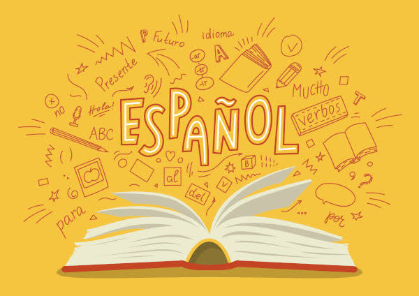
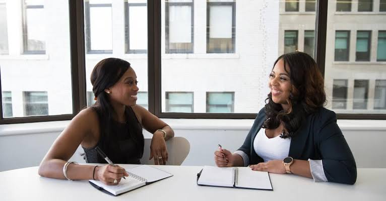

Leticia Barros: Resumo
Hard Skills
- Noções básicas de culinária
-  Nível intermediário em Espanhol
- Habilidades de escrita criativa
Soft Skills
- Trabalho em equipe
-  Boa comunicação
- Proatividade
Interesses Profissionais
- Curto Prazo: Ingressar em um programa de estágio em uma empresa relevante para o campo de estudo desejado, buscando adquirir experiência prática e networking profissional. Projeto para 1 ou 2 anos
- Médio Prazo: Ingressar em uma universidade reconhecida pelo programa de graduação desejado e participar ativamente de atividades estudantis, como clubes, organizações e projetos de pesquisa. Projeto para 8 a 10 anos
- Longo Prazo: Participar de programas de intercâmbio cultural. Projeto para 15 anos